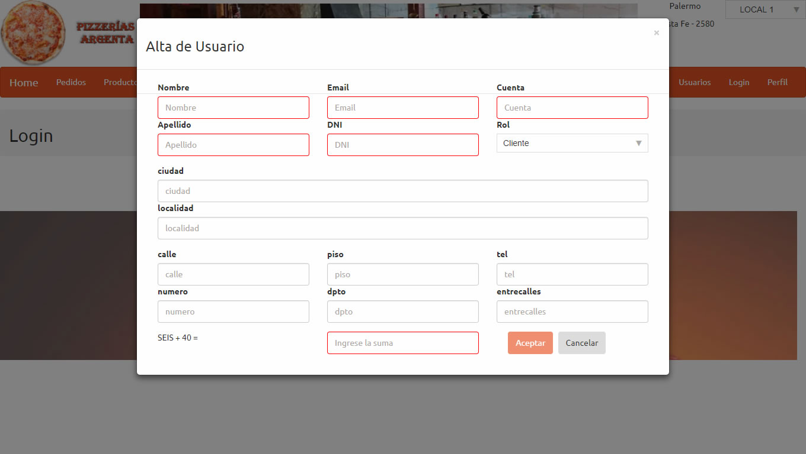

Operatoria Usuario
Al ingresar por primera vez el usuario debera registrarse como se ve en pantalla; Completando los datos obligatorios que estan en rojo y completar el captcha para finalizar el registro.

Una vez registrado se redirigira a la pantalla de productos, donde podemos visualizar todos los productos disponibles para realizar un pedido.
Cuando el usuario finalice de seleccionar las pizzas elegidas debera completar un pequeño captcha.
Luego de completar el captcha confirmará lo elegido junto con su direccion y el sistema informará el tiempo de demora que toma llevar el pedido a su casa. El usuario en esta pantalla podra cambiar la direccion alternando el tiempo de entrega de su pedido.
El usuario tambien tendra la posibilidad de cambiar el local. Esto afectará el tiempo de entrega de su pedido.
Finalizada la confirmacion el usuario tendra la opcion de completar una pequeña encuesta.
En el menú se encuentra la opcion de pedidos donde podra visualizar todos los pedidos realizados junto con su estado.
El usuario tmb tendra la opcion de bajar un listado de los mismos en pdf o xls.